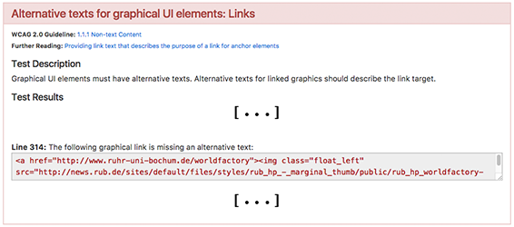
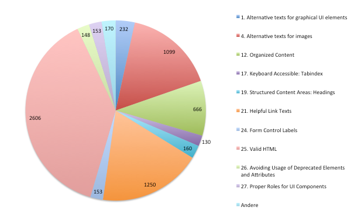

Umsetzung eines entwicklungsunterstützenden Tools zur Überprüfung der Accessibility von Websites für Blinde
Abschlussvortrag zur Bachelorthesis von Felix Arntz
Problem
Der Großteil an Webseiten ist nicht barrierefrei gestaltet, da viele Webdesigner und -entwickler nicht ausreichend über das Thema informiert sind oder diesem nur geringe Priorität einräumen.
Ziel
Es soll ein Prototyp eines Online-Tools entwickelt werden, mithilfe dessen Webdesigner und -entwickler Accessibility-Techniken einfach erlernen und überprüfen können, damit so die Accessibility von Webseiten für Blinde verbessert werden kann.
Exkurs: Screenreader
Ein Screenreader ist ein Programm, das viele blinde Menschen benutzen, um im Internet zu surfen. Es ist somit eine Art Alternative zum Browser.
| Browser | Screenreader |
|---|---|
|
|
|
|
|
|
|
|
|
|
Features des Online-Tools
- Es kann eine URL oder ein HTML-Dokument eingegeben werden, welches dann auf Accessibility-Probleme für blinde Nutzer anhand einiger Prüfschritte überprüft wird.
- Probleme werden gruppiert nach dem jeweiligen Prüfschritt dargestellt.
- Alle Prüfschritte werden für den Nutzer transparent durchgeführt, sodass auch Schritte ohne auftretende Probleme wahrgenommen werden.
- Für jeden Prüfschritt werden weiterführende Links angezeigt, zum Beispiel zu entsprechenden Richtlinien oder zu Methoden der Implementierung.
- Vereinzelt werden Rückfragen an den Nutzer gestellt, da manche Probleme nicht vollautomatisch erkannt werden können.
Entstandenes Online-Tool
Beispiel: www.ruhr-uni-bochum.de
| Vorher | Nachher | |
|---|---|---|
| Quellcode |
|
|
| Browser |

|
|
| Screenreader |
Ressourcen zur Erarbeitung
der Prüfschritte für das Tool
-
Web Content Accessibility Guidelines (WCAG) 2.0
vom W3C definierter Standard
(www.w3.org/TR/WCAG20/) -
BITV-Test
vom BIK-Projekt hergeleitete Prüfschritte
(www.bitvtest.de/bitvtest/das_testverfahren_im_detail/pruefschritte.html)
Prüfschritte des Tools
- 40 der 50 Prüfschritte des BITV-Tests relevant für Blinde
- 25 der 40 relevanten Prüfschritte zumindest teilweise automatisch durchführbar
- durch Aufteilung oder Zusammenfassung einzelner Schritte umfasst das Tool letztendlich 27 Prüfschritte
Qualitätssicherung durch Tests mit Screenreader
Für jeden der 27 implementierten Prüfschritte wurde folgender Prozess erfolgreich durchlaufen:
- Webseite mit Problem suchen und Quellcode herunterladen
- Quellcode mit Screenreader aufrufen und die relevante Stelle im vorgelesenen Text festhalten
- Prüfschritt für den Quellcode mit Tool durchführen
- Quellcode anhand des aufgezeigten Fehlers korrigieren, sodass er bei erneutem Durchlauf nicht mehr aufgelistet wird
- korrigierte Version ebenfalls mit Screenreader aufrufen und relevante Stelle mit Original vergleichen, um so die Verbesserung der Accessibility für Blinde zu beweisen
Statistische Auswertung
- 80 Webseiten, die Homepages der je 5 populärsten Webseiten aus 16 Bereichen (Quelle: Alexa), wurden für alle Prüfschritte getestet
- wegen Überschneidungen hatte das Testkontingent eine Größe von 66 Webseiten
- aufgrund dreier unbehobener technischer Probleme im Tool konnten manche Webseiten nicht getestet werden, sodass letztendlich 53 Tests durchgeführt wurden
Statistische Auswertung

Diagramm zu den durchschnittlich gefundenen Fehlern pro Kategorie (in Klammern Anzahl der ausgewerteten Webseiten)
Statistische Auswertung
Diagramm zu den aufgetretenen Fehlern für jeden Prüfschritt mit mindestens 100 resultierenden Fehlern